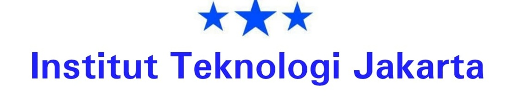
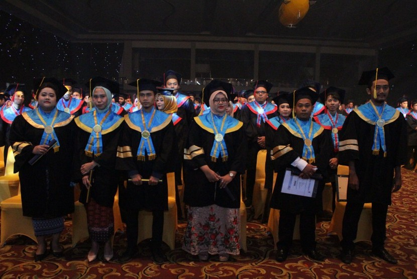

Beranda
Mahasiswa
Pendaftaran
Staff Pengajar
Berita
Kontak Kami
☰
Fakultas Kampus
Fakultas Teknik
Fakultas Matematika dan Ilmu Pengetahuan Alam
Fakultas Hukum
Departemen Teknik Arsitektur dan Perencanaan
Departemen Teknik Elektro dan Teknologi Informasi
Departemen Teknik Geodesi
Departemen Teknik Kimia
Departemen Teknik Mesin dan Industri
Departemen Teknik Nuklr dan Teknik Fisika
Departemen Teknik Sipil dan Lingkungan
Departemen Fisika
Departemen Ilmu Komputer dan Elektronika
Departemen Kimia
Departemen Matematika
Departemen Hukum Administrasi Negara
Departemen Hukum Agraria
Departemen Hukum Dagang
Departemen Hukum Internasional
Departemen Hukum Lingkungan
Departemen Hukum Pajak
Departemen Hukum Pedata
Departemen Hukum Pidana
Departemen Hukum Tata Negara
-Berita Terkini
Rektor Universitas Gadjah Mada (UGM) Prof Dr Panut Mulyono Meg (kiri)
menghadiri wisuda STMIK Nusa Mandiri yang ke-27
Orangtua Kini Bisa Pantau Anak Kuliah via Aplikasi

Wisudawan dan wisudawati di prosesi wisuda STMIK Nusa Mandiri Jakarta yang ke-28.